Neues von Quasitutto, 3. Ausgabe
In diesem Newsletter legen wir den Schwerpunkt auf die rechtliche Situation „Recht auf Reparatur“ nachdem wir im 1. Newsletter (NL) unseren Verein und im 2. NL aus dem internationalen Bereich das „Reparaturmanifest“ vorgestellt haben.
Förderung der Reparatur soll als Teil der Kreislaufwirtschaft endlich eine Gesetzesgrundlage erhalten |
Reparatur — Reparieren ist kein Nischenprodukt mehr. Seit über 12 Jahren setzen wir uns dafür ein. Unzählige Objekte wurden geflickt und repariert, sodass sie ein zweites Leben erhalten haben. Diese Arbeit ist für unsere Kunden und auch für uns äusserst befriedigend. Konnte doch ein lange gehegtes und gepflegtes Lieblingsobjekt wieder zum Leben erweckt werden. |
Recht auf Reparatur Reparaturfreundlichkeit |
Seit über 10 Jahren setzen sich verschiedene Organisationen dafür ein. Lange Zeit wurde das Anliegen vom Parlament als unwichtig eingestuft. Vor 4 Jahren entschied sich die zuständige Komission, die Kreislaufwirtschaft zu stärken, das Umweltschutzgesetz zu revidieren. Reparieren wurde im Fahrwasser der Kreislaufwirtschaft ins Gesetz gespühlt. Im Neuen Umweltschutzgesetz soll der Bundesrat die Möglichkeit erhalten:
Die Umweltkomission des Ständerates hat in der Wintersession die Revision des Umwelschutzgesetzes einstimmig angenommen. Quelle: Konsumentenschutz 1/2024 |
Quasitutto und Repair Café
Quasitutto ist ein Verein, der seit 14 Jahren in Thalwil besteht. Das Angebot besteht das ganze Jahr und ist kostenpflichtig.
- Webseite: https://quasitutto.ch/
Repair Café wurde vom Konsumentschutz gegründet. Wir in Thalwil führen das Repair Café drei mal pro Jahr durch. Dieses Angebot ist kostenlos. Da wir zum grossen Teil dieselben Leute sind, die im QT engagiert sind, führt das immer wieder zu Verwirrungen.
- Webseite: https://repaircafe-thalwil.ch/
- Nächstes Repair Café in Thalwil: 6. Juli 2024
Beispiele aus unserem Reparaturalltag
|
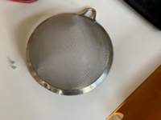 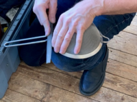 |
Ein kaputtes Siebli wird wieder wie neu! 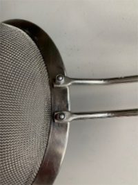 |
|
Was wohl dem Rössli fehlt? |
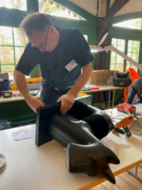 |
|
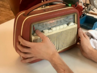 |
Der alte Radio funktioniert wieder wie früher! |
|
Jetzt leuchtet doch auch der Weihnachtsstern wieder! |
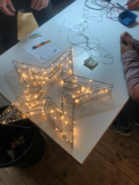 |
|
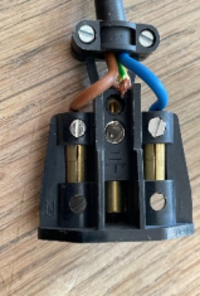 |
Beschädigte Netzkabel oder nicht sachgemäss installierte Kabel an Stecker und Adapter sind gefährlich und können Personen gefährden. Leistung von Quasitutto: Ersatz und Reparatur von bestehenden Stecker, Adapter und Kabel durch Fachpersonal. 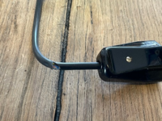 |
|
Als Ersatz für bestehende Fluoreszenzlampen gibt es LED. Der Vorteil liegt darin, dass sie:
|
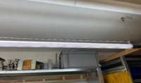 |
|
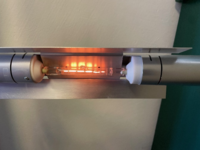 |
Halogenleuchtmittel dürfen seit einigen Monaten nicht mehr verkauft werden. Ersatz bieten eine grosse Auswahl an LED-Leuchtmittel (Vorteile siehe oben). Dabei gibt es dimmbare und nicht-dimmbare Ausführungen. Bestehende Dimmer müssen jedoch meist ersetzt werden, da die bisherigen Dimmer für hohe Leistungen ausgelegt sind und bei LED, welche eine sehr geringe Stromaufnahme haben, nicht mehr eingesetzt werden können. Leistung von Quasitutto: Umbau von bestehenden Leuchten auf LED-Leuchtmittel. Umbau von bestehenden Dimmern auf LED-kompatible Modelle. |
|
So kann das Handy wieder gebraucht werden! |
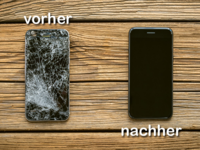 |
|
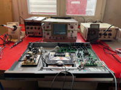 |
Neuer Arbeitsplatz für Reparaturen von elektronischen Geräten und Produkten. |
Monica Schmid — eine unserer Kinderbegleiterinnen
|
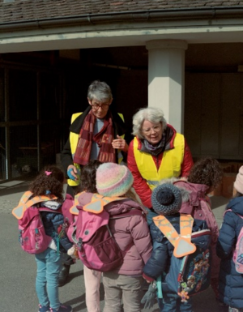 |
Monica (rechts im Bild) ist eine Mitarbeiterin unseres KiGa-Begleitungsteams, die Erstjahrkindergärtler von den Sportferien bis zu den Sommerferien vom Kindergarten in den Hort begleiten. |
Die Kinderbegleitung ist ein wichtiger Teil unserer Dienstleistungen: das Team verpflichtet sich, die Kinder sicher über die Strassenkreuzungen zu lotsen und am Zielort dem Hortner:Innenteam zu übergeben.
Das Begleitungsteam setzt sich aus 4 Frauen zusammen, die sich abwechslungsweise den Kindergärtlern widmen. Es sind dies: Ruth Marti mit Lise Wallace und Stephanie Rudin mit Monica Schmid.
Monica berichtet aus ihrer Tätigkeit
Dieser Dienst wird von allen Beteiligten ausserordentlich geschätzt. Eltern haben grosses Vertrauen in uns Frauen, dass ihre Lieblinge sicher im Hort ankommen. Gleichzeitig lernen die Kleinen, später selbstständig diesen Weg unter die Füsse zu nehmen. Im 2. Halbjahr sind die meisten so weit, dass sie den Weg alleine machen können.
Ein kleiner Junge, dem die Mutter diese Aufgabe noch nicht ganz zutraute, meinte keck: "Weisch, eigentlich chönnt ich's allei, aber s'Mami meint, ich müessi no echli üebe."
So kommt es vor, dass einige Kinder auch im 2. Halbjahr noch Begleitung brauchen, was von dem Team nach Bedarf auch angeboten wird. Die Kindergruppen bestehen aus 2 bis max. 8 Kindern. Um den Informationsfluss zwischen Eltern und Begleitteam aufrecht zu erhalten, haben sie einen Whatsapp-Chat eingerichtet, in dem Unregelmässigkeiten und Unklarheiten kommuniziert werden können.
Natürlich müssen für die Kinder auch gewisse Regeln geltend gemacht werden, wie z.B.: vor dem Fussgängerstreifen immer stehen bleiben, bei vielen Kindern (max. 8) zu zweit laufen, miteinander laufen, luege, lose, laufe etc.
Monica macht diese Arbeit sehr gerne, sie ist abwechslungsreich und die Kinder sorgen immer wieder für erfrischende Überraschungen. Z.B. bemerkte sie einmal, dass ein Bub ohne Regenhose nur in den Strumpfis im Winter unterwegs war und auf ihr Entsetzen darüber meinte: "Weisch ich han halt gern echli Luft um d'Bei ume."
|
Vier Kinder danken für den Dienst. 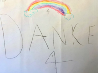 |
Und zum Schluss noch: Alles für d'Chatz oder ich sueche d'Sissi

|
Von Ruth Marti Mein Auftrag: Für drei Wochen Katze Sissi betreuen, Balkon und Sitzplatz giessen. Sissi ist eine scheue und etwas schrullige achtzehnjährige Katze. Ihr bevorzugter Lieblingsplatz ist ein Kanal unter dem Bett, der eng und dunkel ist. Ich muss mich auf den Boden legen und mit einer Taschenlampe „underezünde“ um sie zu sehen. An meinem ersten Tag blieb Sissi unauffindbar. Am nächsten Tag war das Futter sowie das Katzenkistli unberührt. Drei Mal fuhr ich an diesem Tag hin — NICHTS. Ich liess die Sonnenstoren hoch, öffnete Fenster und Türen. Alles rufen nach Sissi blieb erfolglos. Enttäuscht und beunruhigt liess ich die Sonnenstoren wieder runter — plötzlich ein Schrei aus einem Zimmer! Sissi stand vor der Tür. So schnell es ging, liess ich die Sonnenstoren wieder hochfahren, in der Hoffnung Sissi wartet so lang. Hunger und Heimweh liessen Sissi sich durch den kleinsten entstandenen Spalt hindurchschlüpfen und stracks zum Futter sputen. Nach dem Fressen hat sie mich mit schrägem Kopf und vorwurfsvollem Blick gewürdigt und begab sich vollgefressen auf einen ihrer Lieblingsplätze. Die Moral der Geschichte: verreist man drei Wochen in die Ferien und lüftet vor der Abreise gut durch, sollte man sich vergewissern ob die Katzendame Sissi auch wirklich da ist. Sie war auf einem Erkundungsgang, draussen! Ende gut — alles gut |
Und nicht vergessen:
 ..... IM .....
..... IM ..... 
Reparaturfreudige Grüsse,
Das Quasitutto-Team
Impressum
- Redaktions-Team: Maria Fritschy und Anna Michel
- Technischer Support: Thomas Hartmeier
Gerne können Sie unser Neues von Quasitutto auch an Interessierte, Freunde und Bekannte weiterleiten. Kritik und Tipps sind willkommen.
Online Ausgaben dieses Newsletters und der zwei vergangenen können hier gefunden werden:Sollte Ihnen Neues von Quasitutto nicht gefallen, können Sie es hier abbestellen.